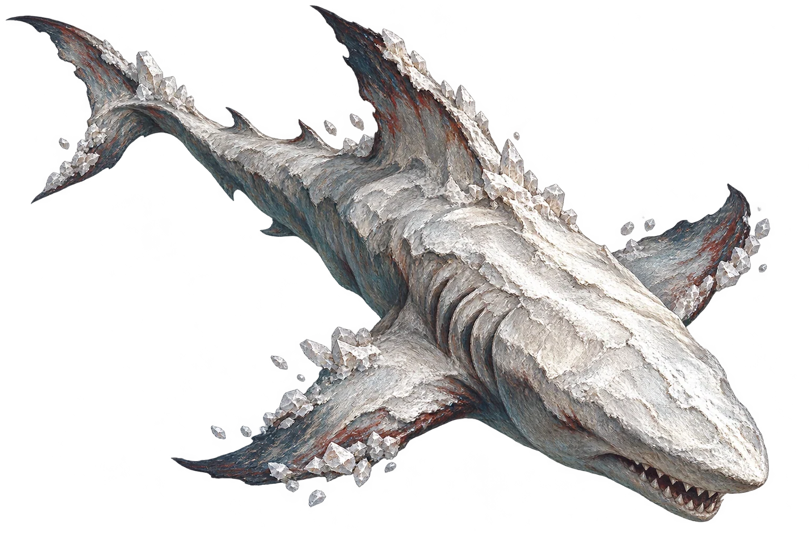

Вдовы соляного моря
Карты и фигурки ведущего
Игровой комплект
3 игрока · 4 игрока · 5 игроков · 6 игроков · 7 игроков
Карта кампании

Поля боя


Герои


Персонажи ведущего


Противники


Резун 1Резун 2Резун 4Резун 3Резун 1Резун 3Резун 5Резун 4Резун 2Резун 5 Сортировщик «Чёрной Сети» 2Сортировщик «Чёрной Сети» 8Сортировщик «Чёрной Сети» 1Сортировщик «Чёрной Сети» 6Гарпунщик на мачтеГарпунщик на мачтеСортировщик «Чёрной Сети» 3Сортировщик «Чёрной Сети» 1Сортировщик «Чёрной Сети» 4Сортировщик «Чёрной Сети» 2Сортировщик «Чёрной Сети» 9Сортировщик «Чёрной Сети» 7Сортировщик «Чёрной Сети» 5
Сортировщик «Чёрной Сети» 2Сортировщик «Чёрной Сети» 8Сортировщик «Чёрной Сети» 1Сортировщик «Чёрной Сети» 6Гарпунщик на мачтеГарпунщик на мачтеСортировщик «Чёрной Сети» 3Сортировщик «Чёрной Сети» 1Сортировщик «Чёрной Сети» 4Сортировщик «Чёрной Сети» 2Сортировщик «Чёрной Сети» 9Сортировщик «Чёрной Сети» 7Сортировщик «Чёрной Сети» 5 Гарпунщик на мачте 2Гарпунщик на мачте 2
Гарпунщик на мачте 2Гарпунщик на мачте 2 Белорез
Белорез